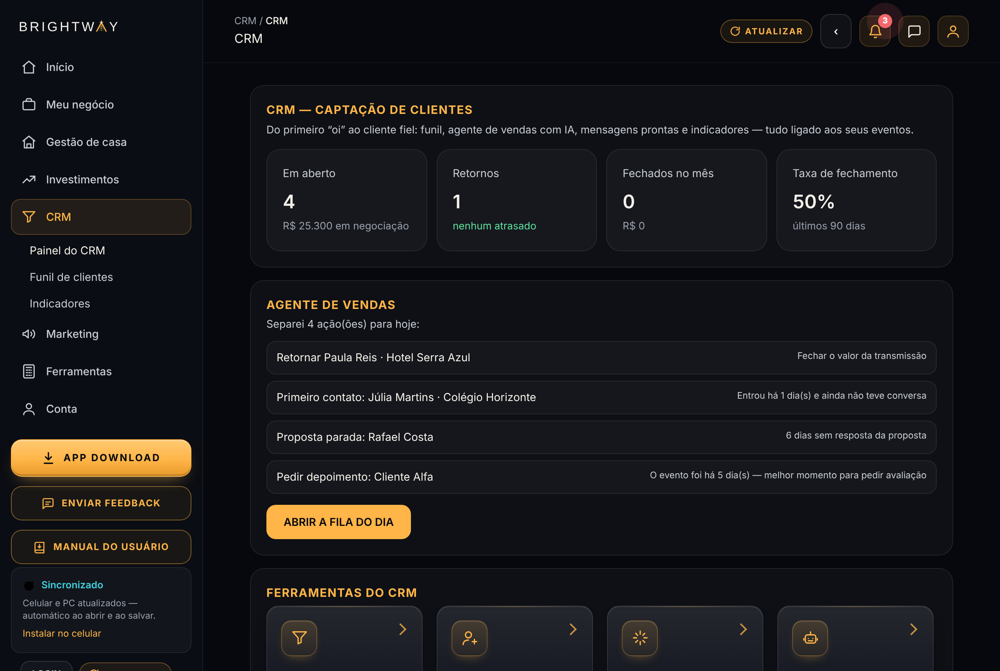
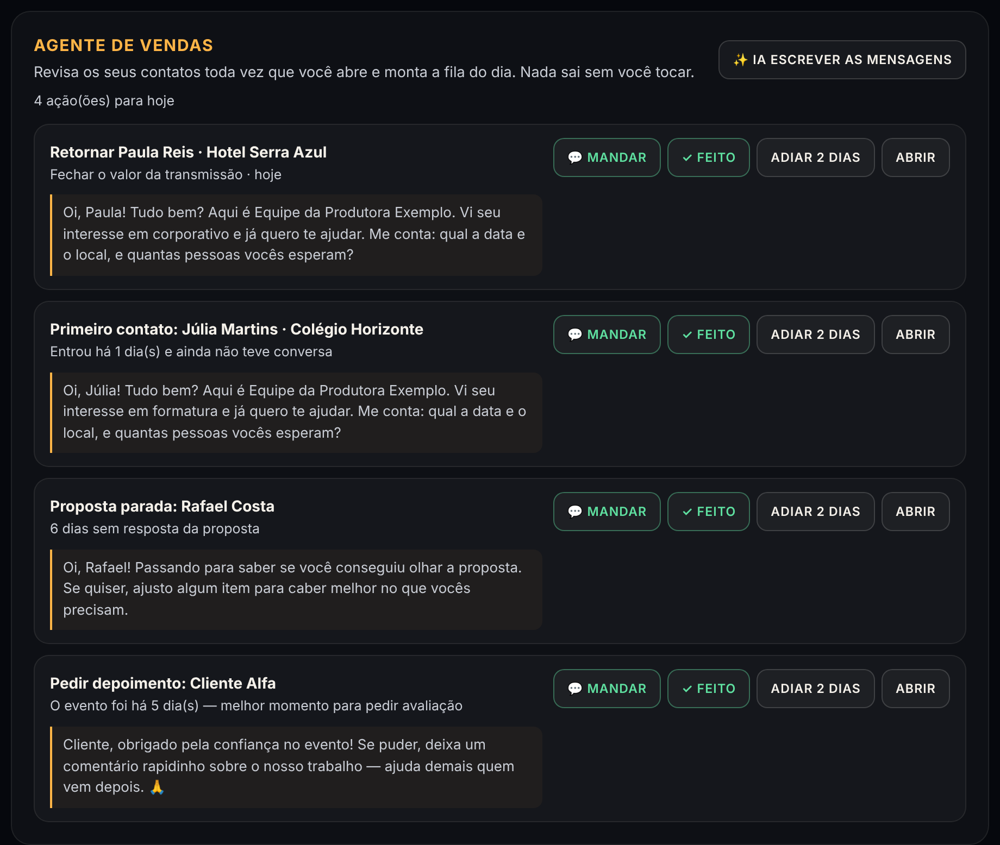

Do primeiro “oi” ao cliente fiel: funil, agente de vendas com IA, mensagens prontas e indicadores — tudo ligado aos seus eventos. Fica em CRM no menu (no celular, em Mais).


Toda vez que você abre o CRM, o agente revisa os contatos e monta a fila: retornos combinados, primeiro contato de quem acabou de chegar, propostas paradas há 3 dias, datas chegando, pós-evento (depoimento e indicação) e clientes antigos para reativar. Toque em MANDAR para abrir o WhatsApp com a mensagem pronta, FEITO ou ADIAR 2 DIAS. Com ✨ IA ESCREVER AS MENSAGENS a IA Brightway personaliza todas de uma vez. Nada é enviado sem você tocar.